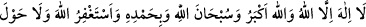
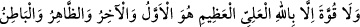
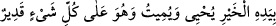

kimsenin o hazînelerde dahli tasavvur edilemez.
Osman (r.a.)’tan rivâyet edildiğine göre o, Hz. Peygamber (s.a.)’e “anahtarların”
anlamını sordu. Hz. Peygamber (a.s.) şu cevabı verdi: “Bunun tefsîri şudur:
Allah’tan başka ilah yoktur, Allah en büyüktür. Her tür eksiklikten münezzeh olarak
övgüye lâyıktır. O’ndan beni bağışlamasını dilerim. Güç ve kuvvet ancak Yüce ve
Azametli Allah’ın sâyesindedir. İlk O’dur, son O; zâhir O’dur bâtın O. Hayır O’nun
elindedir. Diriltir, öldürür ve O her şeye kâdirdir!”[137]
Bu rivâyet esas alınacak olursa mânâ şöyle olur: Bu kelimeler/sözler Allah Teâlâ’ya
âiddir ki onlarla tevhîd edilir ve yüceltilir. Bu kelimeler göklerin ve yerin hayırlarının
anahtarlarıdır. Bunları kim telâffuz ederse bu hayırlar ona ulaşır. Yâni bu kelimeler
gökyüzü ve yeryüzünün hayırlarının anahtarlarıdır. Kim onunla konuşursa o hazinelerin
nakdini elde eder. Denilmiştir ki gökyüzü hazineleri yağmurdur, zemin hazineleri ise
bitki. Bu hazinelerin anahtarı O’nun tasarrufundadır. Ne zaman isterse yağmur gönderir,
ne isterse bitkilerden bitirir.
Bir hadîste Rasûlullah (s.a.)’in şöyle buyurduğu rivâyet edilir: “Yeryüzü
hazinelerinin anahtarları getirilerek almam için bana arzedildi de ben: Hayır! Bir
gün aç kalayım bir gün doyayım” dedim.”[138]
Sâib der ki:
Devlet hümâsı kemendimize düşecek olsa,
Himmetimizin yüceliğinden salıveririz.
et-Te’vîlâtü’n-Necmiyye’de der ki: “İşâret etmektedir ki lütfunun hazînelerinin
anahtarları O’na âiddir. Bu anahtarlar, kalplerin semâlarında gizlenmiştir. Kahrının
hazînelerinin anahtarları da O’na âiddir. Bu anahtarlar da nefslerin arzına bırakılmıştır.
Yâni O’nun bu lütuf ve kahrının hazînelerinin anahtarlarına O’ndan başkası sâhip
olamaz! O Fettâh (çok açan)’tır, anahtar onun kudret elindedir. Dilediği kimselerin
kalbine lütuf hazinelerinin kapılarını açar da ondan hikmet pınarları ve güzel ahlâk
mücevherleri çıkar. Dilediği kimselerin nefsinde de kahır hazinelerinin kapılarını açar
da hîle, tuzak ve desîse pınarlarını ve türlü kötü sıfatları çıkarır. İşte bu sırdan dolayı
Hz. Peygamber (s.a.): “Kalplerin anahtarı Lâ ilâhe illâllah’tır!”[139] buyurmuştur.
Nitekim Hz. Osman kendisine göklerin ve yerin anahtarlarının tefsîrini sorunca
“Lâilâhe illâllah...tır” cevâbını vermişti.